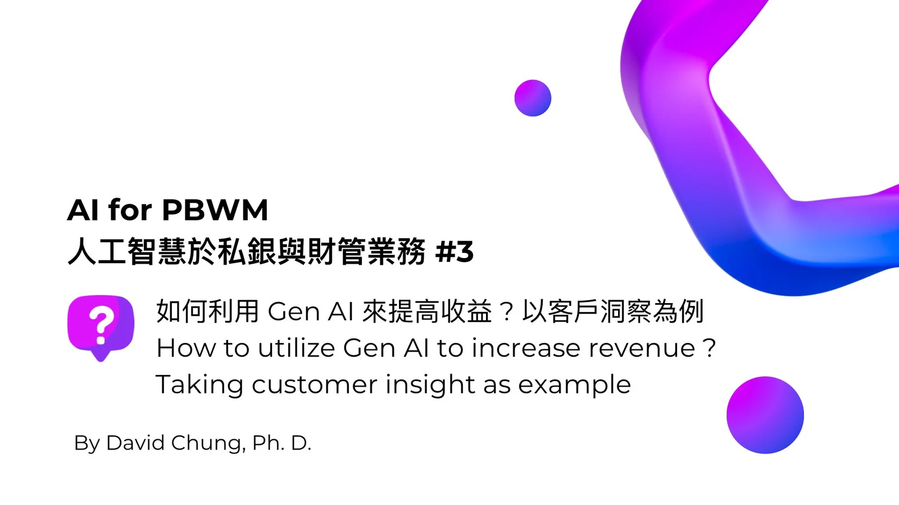
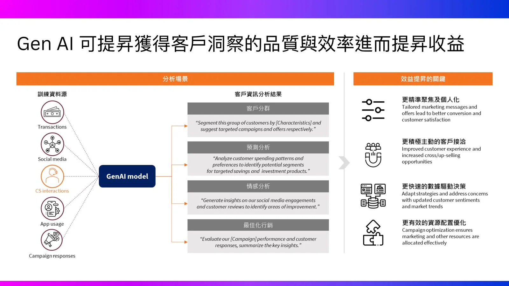

上面四個面向均已有市場上的同業案例可以參考，我們會再後續的文章中進行介紹。
💡 在本系列文章中，我們將深入探討人工智慧（AI）如何變革私銀與財管業務。而本篇文章將聚焦「如何利用 Gen AI來提高收益？以客戶洞察為例」
根據我們的觀察，財富管理業務中需要進行客戶資料的分析並進一步瞭解客戶，即獲得客戶洞察時，仍需仰賴大量的人工作業以及可能涉及多個部門與團隊的協作，導致需要花費大量的時間、較易發生作業上的錯誤以及不易掌握複雜的資料型態…等痛點發生。
而使用生成式 AI 技術，將可於如下四個面向來獲得效益的提昇
1️⃣ 更精準聚焦及個人化：透過生成式 AI 來分析顧客的資料，金融業不僅能更深入了解其目標客群的需求與偏好並依此來提供個人化的行銷資訊與服務。。這不僅可提高顧客滿意度更可以提昇品牌忠誠度。
2️⃣ 更積極主動的客戶接洽：金融業利用 Gen AI 可分析客戶的數據與分析可更快速了解客戶的需求及行為模式，從而制定可積極的接洽策略與行動。再者可利用多種聯繫管道，例如社交媒體、電子郵件及即時通訊平台主動與客戶保持聯繫，定期提供有價值的資訊和更新，增強客戶的參與感與聯繫感。
3️⃣ 更快速的數據驅動決策：由於客戶的狀態以及市場變化均非常快速，Gen AI可以即時進行分析並快速獲得洞見，金融機構即可依據所獲得之洞見來進行決策；更重要的是這些決策是由數據所驅動的。
4️⃣ 更有效的資源配置優化：利用 Gen AI 來快速分析客戶的資料來獲得客戶洞見，對於後續的行銷與推廣的資源上即可進一步優化，更精準地打中客戶的需求，避免資源的浪費。
💡 In this series of articles, we will delve into how artificial intelligence (AI) is transforming private banking and wealth management services. This particular article will focus on “How to Utilize Gen AI to Increase Revenue: A Case Study on Customer Insights.”
According to our observations, gaining customer insights within wealth management requires analyzing customer data and understanding the customer, which still heavily relies on significant manual work and collaboration across multiple departments and teams. This process can be time-consuming, prone to errors, and challenging to handle due to complex data types.
Using generative AI technology, we can achieve benefits in the following four aspects:
1️⃣ More Precise Targeting and Personalization: By analyzing customer data with generative AI, the financial industry can gain deeper insight into the needs and preferences of its target audience and offer personalized marketing information and services accordingly. This not only enhances customer satisfaction but also improves brand loyalty.
2️⃣ More Proactive Customer Engagement: Financial institutions can use Gen AI to analyze customer data and understand customer needs and behavior patterns more quickly, allowing them to develop proactive engagement strategies. They can maintain contact with customers through various channels, such as social media, email, and instant messaging platforms, regularly providing valuable information and updates to enhance customer engagement and connection.
3️⃣ Faster Data-Driven Decision-Making: Given the rapid changes in customer status and market dynamics, Gen AI can perform real-time analyses and quickly provide insights. Financial institutions can base decisions on these insights, ensuring that decisions are data-driven.
4️⃣ More Effective Resource Allocation Optimization: By quickly analyzing customer data with Gen AI to gain customer insights, financial institutions can further optimize their marketing and promotional resources to more accurately meet customer needs and avoid resource wastage.
原文發表於 LinkedIn。